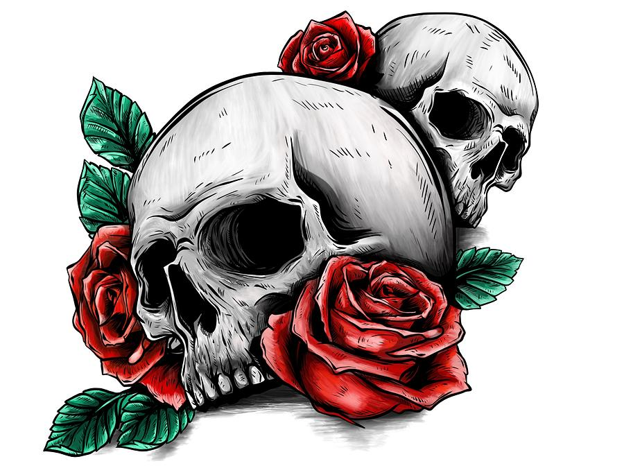

Rounded Images
Use the border-radius property to create rounded images:

I am actually excited to do this lesson.
Use the border-radius property to create rounded images:
Use the border-radius property to create circle images:
Responsive images will automatically adjust to fit the size of the screen.
Resize the browser window to see
the effect:

To center an image, set left and right margin to auto and make it into a block element:

The Solar System

The opacity property can take a value from 0.0 - 1.0. The lower value, the more transparent:
How to position text in an image:
The CSS 'filter' property adds visual effects (like blur and saturation) to an element.
Note: The filter property is not supported in Internet Explorer or Edge 12.
to change the color of all images to black and white (100% gray):
img {
filter: grayscale(100%);
}

Move the mouse over the image:
This is an example to demonstrate how CSS and JavaScript can work together. First, use CSS to create a modal window (dialog box), and hide it by default.
Then, use a Javascript to show the modal window and display the image inside the modal, when a user clicks on the image.
Also note that we use the value as an image caption text inside the modal.